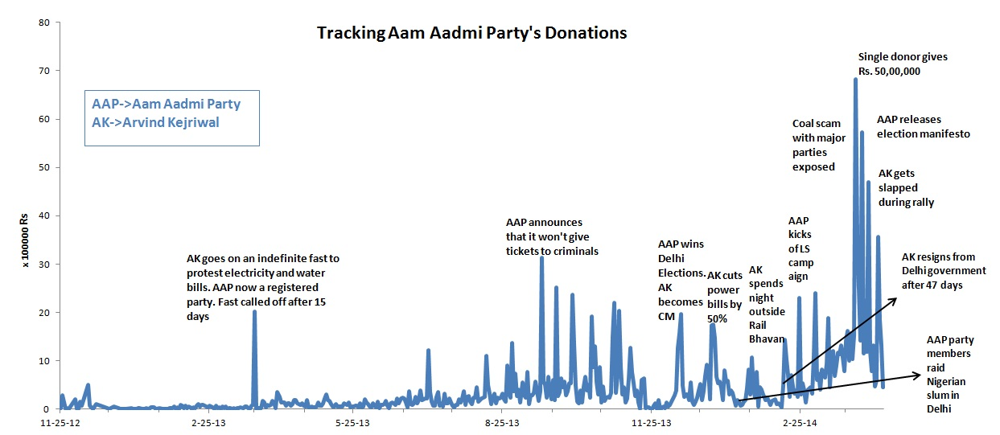

How India's youngest political party is funding its journey
-Manasi Vaidya
In the summer of 2011, a few months after the world was captivated by the images of the Arab Spring; a silent revolution against corruption was started on the streets of the Indian capital, one that spoke to general public right down to the lowest common denominator. In the heady rush of a people’s agitation against the system, the movement then morphed into a political party called 'Aam Aadmi Party', which literally translates as 'The Common Party', with lofty goals of cleaning up the system and introducing transparency in government affairs. Critics had a field day espousing the impossibility of actually following through with such goals.
And then they did something that silenced them all. They decided to tell everyone where they got their money from.
With over 800 million eligible voters, the ongoing Indian general elections is the largest democratic exercise in the world with people voting for the next leader of state. Corruption is an emotional issue in India. It is quite difficult to go through even usual paperwork without encountering bribery at some point, not to mention the number of money-laundering scams that have hit the headlines recently. In such a scenario, funding for political parties is shrouded in mystery. The Election Commission demands that any donation above Rs.20,000 (roughly $334)needs to be reported. Major parties would claim collective donations of a smaller amount, to effectively bypass this requirement and hide their sources. So, the funding data that the AAP has been providing since late 2012, hasn’t had any parallels in Indian politics.
"They are changing the discourse in Indian politics," says Milan Vaishnav, an associate for the South Asia Program at the Carnegie Endowment for International Peace. "They are bringing anti corruption and transparency in to party politics." Once visualized, the trajectory of the funds that AAP has collected since 2012 tells one common story theme- Indians tend to donate money when it comes to emotional issues. Each time, Arvind Kejriwal went on a fast to protest power bill hikes, or got publicly assaulted , or refused to give election tickets to criminals people donated money.

It is also easy to understand how fickle people's opinion of the party was. Each time AAP leaders courted controversy by implementing debatable measures, like conducting a night raid on an illegal slum or withdrawing the government they formed after only 49 days to protest non-cooperation by other parties, a dip in their popularity directly caused a dip in their funding. Even though, most people considered the latter event admirable, many people were disillusioned by the party, which can be seen in the dip in funding around that time.
The online mode of fund collection has allowed Indians living abroad to contribute, thus expanding the donor population considerably. NRI's from 89 countries across the globe contributed, but the highest percentage of donors were from the United States, UAE, Singapore and Hong Kong which have traditionally been home to a number of Indians living abroad who along with those from other places have contributed to roughly 27% of all funds collected so far. " There has been a sea change in the NRI community," Vaishnav says." They are more energized than ever before.
There are plenty of anecdotal stories of young individuals who left their jobs or took sabbaticals to volunteer with the Aam Aadmi Party as a run up for the current elections. Vaishnav says that NRI's understand the high stakes involved in these elections, with the Indian economy struggling to get back on track and find a place on the global stage. All these factors have influenced people to participate, both personally and monetarily in the movement.
However, this recently caused some controversy when rival parties alleged that AAP was receiving funding from foreign sources, which would be in direct violation of the Election Commission rules, which state that foreign nationals or organizations cannot donate money to an Indian political party.
The data however indicated that even though Non Resident Indians have shown their enthusiasm on different the AAP , when it came to donating large amounts, it was people residing in India that were the larger contributors. Even in countries like United States or Singapore that have a higher currency rate, the donations were largely at par with the average donations in India and not higher.
As an indicator to its acronym AAP, which translates as 'you' in Hindi, the party has put its future in the hands of Indian citizens. The next few years will be a test for not just AAP, but the citizens who contributed to its growth, both, monetarily and in spirit. Vaishnav adds, "When you think back - what the impact will be of AAP-it won't just be short term electoral benefits. They started asking the questions-where are you getting your funding? How are you selecting candidates? You can't put the genie back in the bottle. The contribution that AAP has given will stay."